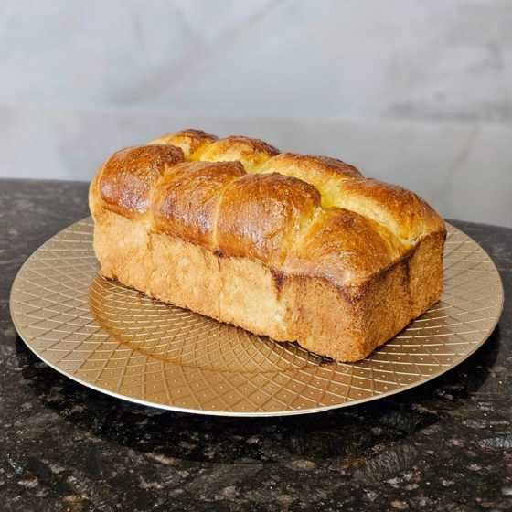
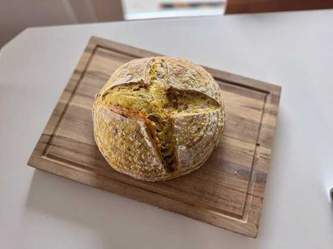
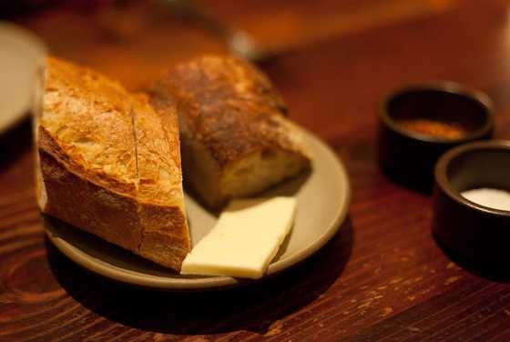

クロワッサンと紅ぐみ
「クロワッサンが好き」「赤が好き」から生まれた、運動会のような元気な赤の小さなパン屋。焼きたてのひとつで、まちを少し明るくします。
Instagram場所を見る
お店のこと
由来と想い
店長の室さんが「クロワッサンが好き」「赤が好き」という気持ちから始めたお店です。赤は運動会を連想させる元気な色で、見ると楽しい気分になる、とお話しされていると地元メディアで紹介されています。
- 2022年3月26日、下関市岬之町にオープン
- 店内で焼く発酵バター使用のクロワッサンが中心
- 入口付近の壁画は店長のデザイン、スタッフの制服は体操服風のオリジナル(取材記事による)
- 外観は赤を基調に(記事による)
店名「紅ぐみ」の由来は確認できていません。このページの「運動会のような紅白・組」というモチーフは、制作側のイメージです。

メニュー
過去の取材記事で紹介された商品(現在の提供状況・価格・営業時間は準備中)

プレーンクロワッサン
外はサクサク、中はしっとりと紹介されています。

ミニクロワッサン / ミニチョコ
ひとつから買える小さなサイズ。

ダマンド / ダマンドチョコ
アーモンドクリームをのせて焼いた一品。

日曜限定の食パン
Instagramから予約できると紹介されています。
ほかに、チョリソー入りの「チョリクロ」、フィッシュソーセージを挟んだ「フィッシュロール」、マスカルポーネと生クリームの「ラミレス」などが紹介されています。
営業時間・定休日・価格・電話: 準備中(最新はInstagramをご確認ください)。写真はすべてフリー素材のイメージで、実際の商品ではありません。







口コミ
制作側が作った例文です。実在のお客様の声ではありません。
焼きたての香りに誘われて立ち寄りました。サクッとした食感がうれしい、朝のお散歩のごほうびです。
赤を基調にした外観が目印で、すぐ分かりました。小さいサイズがあって、いろいろ選べるのが楽しいです。
おやつにも、ちょっとしたおつまみにもなりそうな種類があって、ついあれこれ買ってしまいました。
アクセス
場所と最新情報
〒750-0014 山口県下関市岬之町５−１４
電話: 準備中
営業時間・定休日: 準備中
Instagram @croissant.to.akagumi